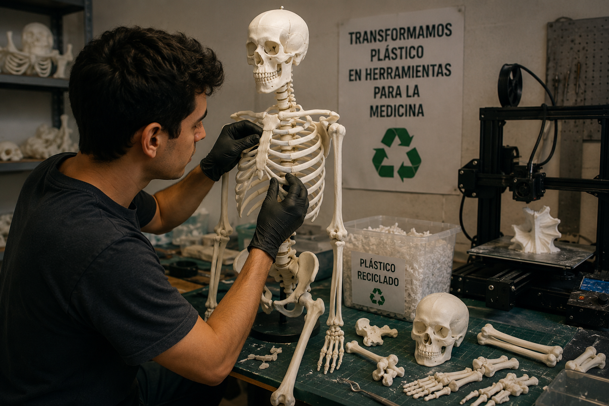
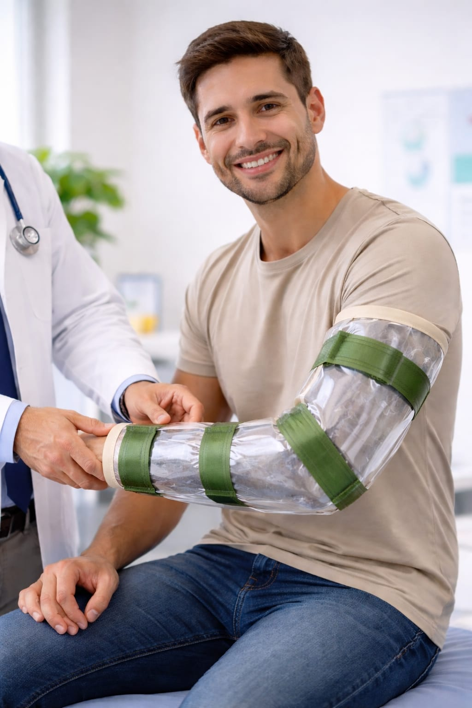
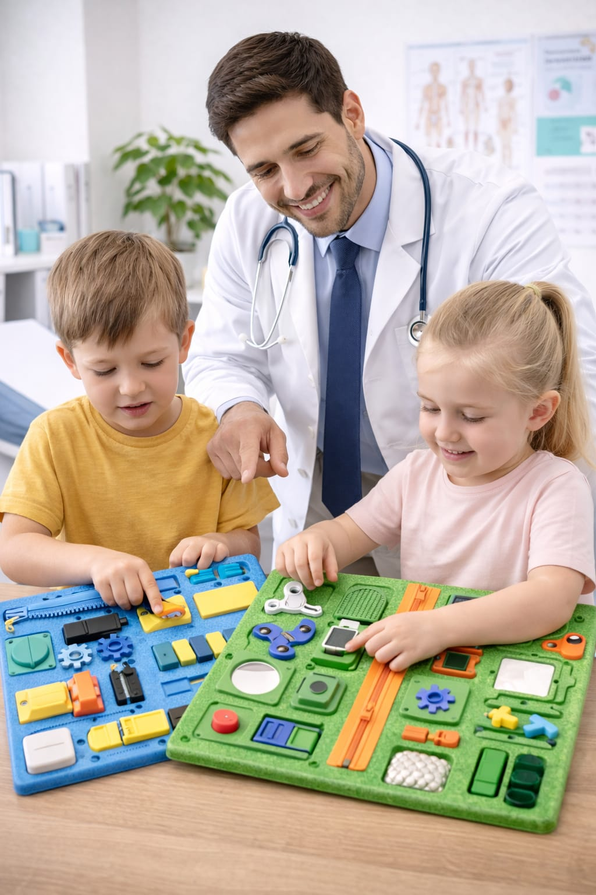

Tecnología médica sustentable hecha con plástico reciclado
EcoInsumos es una iniciativa que busca reutilizar plásticos como el polietileno de alta densidad y el polipropileno para crear materiales médicos, ortopedia y modelos anatómicos. Nuestro objetivo es reducir la contaminación plástica y ofrecer soluciones médicas accesibles y sostenibles.
Con la compra del plastico recuperado por GIRO para poder desarrollar tecnología que permita transformar residuos plásticos en productos útiles para hospitales, estudiantes de medicina y profesionales de la salud.
Nuestro enfoque se basa en la economía circular, buscando cerrar el ciclo de vida de los materiales plásticos y contribuir a un futuro más verde y saludable para todos.
A través de este proyecto, esperamos no solo reducir la cantidad de plástico que termina en vertederos y océanos, sino también fomentar la innovación en el sector médico y promover prácticas más sostenibles en la industria.
Invitamos a todos a unirse a esta iniciativa, ya sea como colaboradores, consumidores o simplemente compartiendo la visión de un mundo donde la tecnología y la sostenibilidad van de la mano para mejorar la calidad de vida de las personas y del planeta.
ademas esto ayudaria a los estudiantes de la facultad de medicina ya que usarian menos de su presupuesto en comprar materiales y podrian usar ese dinero para otras cosas como libros o cursos, ademas de que los hospitales podrian reducir sus costos al adquirir estos productos reciclados a un precio mas accesible.
¿Por qué elegir nuestros productos?
Nuestros productos médicos están diseñados para ofrecer una alternativa sustentable, accesible y moderna frente a muchos insumos tradicionales. Utilizamos plástico reciclado y tecnologías de impresión 3D para crear materiales resistentes, funcionales y de menor impacto ambiental.
A diferencia de muchos insumos convencionales, nuestros productos ayudan a reducir la contaminación plástica y permiten reutilizar materiales que normalmente terminarían como residuos. Además, buscamos disminuir costos de producción para que hospitales, estudiantes y centros educativos puedan acceder a herramientas médicas más económicas.
Entre nuestras soluciones se encuentran esqueletos anatómicos, férulas, prótesis, modelos educativos y simuladores médicos desarrollados con materiales reciclados cuidadosamente tratados.
Algunas de nuestras ventajas de nuestros productos pueden ser:
• Menor impacto ambiental.
• Reutilización de plástico reciclado.
• Costos más accesibles.
• Producción mediante impresión 3D.
• Materiales resistentes y livianos.
• Innovación tecnológica aplicada a medicina.
• Ayuda a instituciones educativas y hospitales.
Nuestro objetivo no es reemplazar completamente todos los insumos médicos tradicionales, sino ofrecer soluciones sustentables y accesibles para prácticas, enseñanza, entrenamiento y determinados usos médicos.



Email: contacto@ecoinsumos.com
Instagram: @EcoInsumos
Teléfono: +54 0000-0000